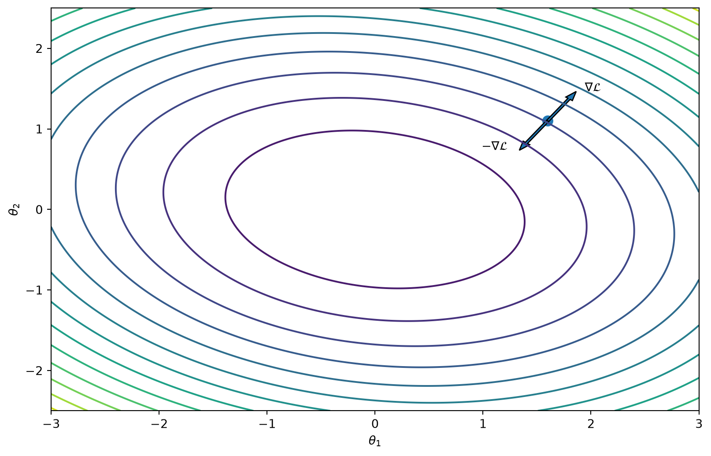

Entender cómo una red neuronal aprende sus parámetros.
flowchart LR
A["Datos"] --> B["Modelo"]
B --> C["Loss"]
C --> D["Gradientes"]
D --> E["Optimizador"]
E -. "actualiza parámetros" .-> B
classDef main fill:#f8f9fa,stroke:#333,stroke-width:1.5px,color:#111;
class A,B,C,D,E main;
La clase conecta matemática, PyTorch y aplicaciones en imágenes médicas.
Mapa conceptual
flowchart LR
A["Riesgo empírico"] --> B["Forward"]
B --> C["Loss"]
C --> D["Gradiente"]
D --> E["Backpropagation"]
E --> F["Actualización"]
classDef concept fill:#f8f9fa,stroke:#333,stroke-width:1.5px,color:#111;
class A,B,C,D,E,F concept;
Después veremos cómo esto aparece en PyTorch y MONAI.
La pregunta central
Tenemos una red:
\[
\hat y=f_\theta(x)
\]
y queremos que prediga bien.
Pregunta central
¿Cómo elegimos \(\theta\)?
El ciclo de entrenamiento, visualmente
flowchart LR
A["Datos<br/>x, y"] --> B["Modelo<br/>fθ(x)"]
B --> C["Predicción<br/>ŷ"]
C --> D["Loss<br/>L(ŷ,y)"]
D --> E["Backward<br/>∇θL"]
E --> F["Optimizador<br/>actualiza θ"]
F -. "siguiente mini-batch" .-> B
El entrenamiento es un ciclo: la salida de una iteración modifica el modelo que verá el siguiente mini-batch.
Parámetros de una red
Los parámetros entrenables son los pesos y los sesgos.
flowchart LR
x1(("x₁"))
x2(("x₂"))
h1(("h₁"))
h2(("h₂"))
y(("ŷ"))
x1 -- "w₁₁^(1)" --> h1
x2 -- "w₂₁^(1)" --> h1
x1 -- "w₁₂^(1)" --> h2
x2 -- "w₂₂^(1)" --> h2
h1 -- "w₁^(2)" --> y
h2 -- "w₂^(2)" --> y
b1["b₁^(1)"] -.-> h1
b2["b₂^(1)"] -.-> h2
b3["b^(2)"] -.-> y
classDef neuron fill:#f8f9fa,stroke:#333,stroke-width:1.5px,color:#111;
classDef bias fill:#fff7e6,stroke:#a66b00,stroke-width:1.2px,color:#111;
class x1,x2,h1,h2,y neuron;
class b1,b2,b3 bias;
Para disminuir localmente la loss, avanzamos en la dirección opuesta al gradiente.
Geometría del gradiente

Figura 2: El gradiente es perpendicular a las curvas de nivel y apunta hacia el incremento más rápido; para minimizar avanzamos en la dirección opuesta.
flowchart LR
subgraph E["1 epoch = recorrer una vez todo el dataset"]
B1["Mini-batch 1<br/>muestras 1–4"]
B2["Mini-batch 2<br/>muestras 5–8"]
B3["Mini-batch 3<br/>muestras 9–12"]
B4["Mini-batch 4<br/>muestras 13–16"]
B5["Mini-batch 5<br/>muestras 17–20"]
end
B1 --> B2 --> B3 --> B4 --> B5
I1["Iteration 1"] -.-> B1
I2["Iteration 2"] -.-> B2
I3["Iteration 3"] -.-> B3
I4["Iteration 4"] -.-> B4
I5["Iteration 5"] -.-> B5
Cada iteration procesa un mini-batch.
Cuando se procesaron todos los mini-batches, se completó 1 epoch.
Puente · Del gradiente al aprendizaje
Lo que ya sabemos
En los bloques 1–4
El modelo recibe datos.
Produce una predicción.
La predicción se compara con el objetivo.
La pérdida resume el error.
El gradiente indica cómo cambia la pérdida.
El learning rate define el tamaño del paso.
La pregunta que sigue
¿Cómo se usan esos gradientes para cambiar los parámetros?
flowchart LR
X["Datos"] --> M["Modelo"]
M --> P["Predicción"]
P --> L["Pérdida"]
L --> G["Gradientes"]
G --> U["Actualización"]
U -. "siguiente iteración" .-> M
classDef data fill:#e5f3f8,stroke:#2f6690,stroke-width:1.5px,color:#17324d;
classDef loss fill:#fff0eb,stroke:#c95d3e,stroke-width:1.5px,color:#17324d;
classDef learn fill:#e9f4ee,stroke:#397b64,stroke-width:1.5px,color:#17324d;
class X,M,P data;
class L loss;
class G,U learn;
El modelo aprende porque la pérdida produce una señal que permite corregir sus parámetros.
Bloque 5 · Forward y backpropagation
Forward pass
Durante el forward pass, los datos atraviesan la red capa por capa hasta producir una predicción.
flowchart LR
X["Entrada<br/>x"] --> L1["Capa 1<br/>h₁"]
L1 --> L2["Capa 2<br/>h₂"]
L2 --> O["Predicción<br/>ŷ"]
O --> LOSS["Pérdida<br/>L(ŷ,y)"]
Y["Objetivo<br/>y"] --> LOSS
classDef data fill:#e5f3f8,stroke:#2f6690,stroke-width:1.5px,color:#17324d;
classDef model fill:#eef1f8,stroke:#2f6690,stroke-width:1.5px,color:#17324d;
classDef loss fill:#fff0eb,stroke:#c95d3e,stroke-width:1.5px,color:#17324d;
class X,Y data;
class L1,L2,O model;
class LOSS loss;
Durante el forward la red calcula activaciones, predicciones y loss.
Todavía no modifica sus parámetros.
La información cambia de dirección
flowchart LR
X["x"] --> F1["Forward<br/>transforma"]
F1 --> YH["ŷ"]
YH --> E["Pérdida<br/>compara con y"]
E --> B1["Backward<br/>calcula ∂L/∂θ"]
B1 --> U["Update<br/>θ ← θ − η∇L"]
classDef forward fill:#e5f3f8,stroke:#2f6690,stroke-width:1.5px,color:#17324d;
classDef error fill:#fff0eb,stroke:#c95d3e,stroke-width:1.5px,color:#17324d;
classDef backward fill:#e9f4ee,stroke:#397b64,stroke-width:1.5px,color:#17324d;
class X,F1,YH forward;
class E error;
class B1,U backward;
El forward lleva los datos hacia la predicción. El backward lleva la señal del error hacia los parámetros.
Forward durante entrenamiento
Durante entrenamiento:
\[
x
\rightarrow
f_\theta(x)
\rightarrow
\hat y
\rightarrow
\mathcal L(\hat y,y)
\]
El resultado del forward será utilizado después para calcular los gradientes.
Si no limpiamos los gradientes, una nueva llamada a backward() se suma a los valores anteriores.
Esta acumulación es intencional y puede aprovecharse, por ejemplo, en gradient accumulation.
Un paso de entrenamiento en PyTorch
Antes de mirar el código completo, podemos leer el entrenamiento como una secuencia de cuatro preguntas:
flowchart LR
Z["1. Limpiar<br/>gradientes"] --> F["2. Forward<br/>¿qué predice?"]
F --> L["3. Loss<br/>¿cuánto se equivoca?"]
L --> G["4. Backward<br/>¿cómo corregir?"]
G --> U["Update<br/>cambiar θ"]
U -. "siguiente batch" .-> F
classDef prepare fill:#f1f3f5,stroke:#66727d,stroke-width:1.5px,color:#202a33;
classDef forward fill:#e5f3f8,stroke:#2f6690,stroke-width:1.5px,color:#17324d;
classDef loss fill:#fff0eb,stroke:#c95d3e,stroke-width:1.5px,color:#17324d;
classDef update fill:#e9f4ee,stroke:#397b64,stroke-width:1.5px,color:#17324d;
class Z prepare;
class F forward;
class L loss;
class G,U update;
Dataset y DataLoader resuelven un problema distinto al modelo: cómo representar, cargar y agrupar los datos.
Del archivo médico al modelo
flowchart LR
D["DICOM / NIfTI"] --> I["Imagen médica"]
I --> T["Tensor<br/>(C,D,H,W)"]
T --> B["Batch<br/>(B,C,D,H,W)"]
B --> M["Modelo"]
M --> O["Predicción"]
classDef input fill:#e5f3f8,stroke:#2f6690,stroke-width:1.5px,color:#17324d;
classDef process fill:#eef1f8,stroke:#2f6690,stroke-width:1.5px,color:#17324d;
classDef output fill:#e9f4ee,stroke:#397b64,stroke-width:1.5px,color:#17324d;
class D,I input;
class T,B,M process;
class O output;
El modelo no recibe directamente un archivo DICOM: recibe tensores con una forma y una representación definidas.
Tensores en imágenes médicas
En PyTorch, una imagen 2D suele representarse como:
\[
(B,C,H,W)
\]
Un volumen 3D:
\[
(B,C,D,H,W)
\]
Por ejemplo:
\[
(2,1,128,256,256)
\]
representa:
batch size = 2;
1 canal;
128 slices;
\(256\times256\) píxeles por slice.
Batch size en 3D
flowchart TB
V["Volumen 3D grande"] --> A["Activaciones intermedias"]
A --> G["Gradientes"]
G --> S["Memoria requerida"]
S --> R["Reducir batch<br/>o usar patches"]
R --> C["Gradient accumulation<br/>o mixed precision"]
classDef volume fill:#e5f3f8,stroke:#2f6690,stroke-width:1.5px,color:#17324d;
classDef memory fill:#fff0eb,stroke:#c95d3e,stroke-width:1.5px,color:#17324d;
classDef strategy fill:#e9f4ee,stroke:#397b64,stroke-width:1.5px,color:#17324d;
class V,A,G volume;
class S memory;
class R,C strategy;
Un solo volumen:
\[
128\times256\times256
=
8\,388\,608
\]
voxels.
Durante entrenamiento también debemos almacenar:
activaciones intermedias;
gradientes;
parámetros;
estados del optimizador.
En segmentación 3D, un batch size de 1 o 2 puede ser completamente normal.
Estrategias cuando falta memoria
En entrenamiento 3D son frecuentes:
patch-based training;
gradient accumulation;
mixed precision;
gradient checkpointing;
reducir resolución;
arquitecturas más eficientes.
Gradient accumulation
Permite acumular gradientes de varios mini-batches antes de actualizar:
accumulation_steps =4optimizer.zero_grad()for step, batch inenumerate(train_loader): outputs = model(batch["image"]) loss = loss_function(outputs, batch["label"]) loss = loss / accumulation_steps loss.backward()if (step +1) % accumulation_steps ==0: optimizer.step() optimizer.zero_grad()
Permite simular un batch efectivo mayor sin almacenar todos los ejemplos simultáneamente.
Mixed precision
En GPU podemos utilizar menor precisión para parte de los cálculos:
El corazón del training loop es exactamente el mismo que en PyTorch.
MONAI no reemplaza PyTorch
flowchart LR
D["Datos médicos"] --> T["MONAI<br/>Transforms / Dataset"]
T --> P["PyTorch<br/>DataLoader"]
P --> M["PyTorch / MONAI<br/>Model"]
M --> L["MONAI / PyTorch<br/>Loss"]
L --> B["PyTorch<br/>backward()"]
B --> O["PyTorch<br/>optimizer.step()"]
MONAI especializa el pipeline para imágenes médicas; PyTorch sigue siendo el motor de entrenamiento.
MONAI: inferencia
En volúmenes grandes puede no ser posible procesar toda la imagen de una vez.
La imagen se divide en regiones que se procesan por separado y luego se combinan.
Pipeline completo
flowchart LR
D["Dataset"] --> T["Transforms"]
T --> DL["DataLoader"]
DL --> F["Forward"]
F --> L["Loss"]
L --> BW["Backward"]
BW --> O["Optimizer"]
O --> F
F -. validation .-> V["Métricas"]
V -.-> C["Checkpoint"]
El entrenamiento no es solo una red neuronal: es un pipeline completo y reproducible.
Lo que debe quedar claro
El forward calcula predicciones y loss.
backward() calcula gradientes.
El optimizador utiliza esos gradientes para modificar los parámetros.
El learning rate controla la escala de las actualizaciones.
Training y validation cumplen funciones diferentes.
En imágenes 3D, memoria y batch size condicionan fuertemente el entrenamiento.
MONAI especializa PyTorch para imágenes médicas, pero no reemplaza su training loop.